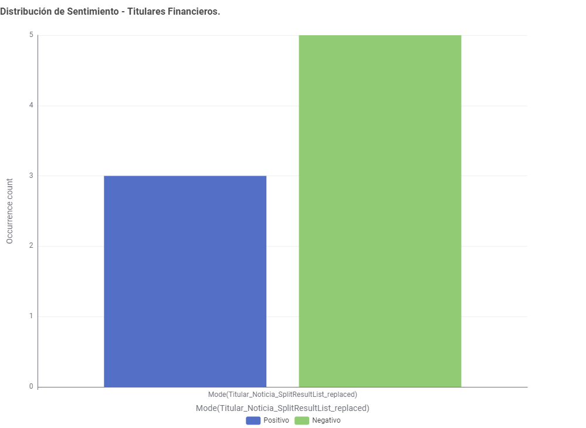
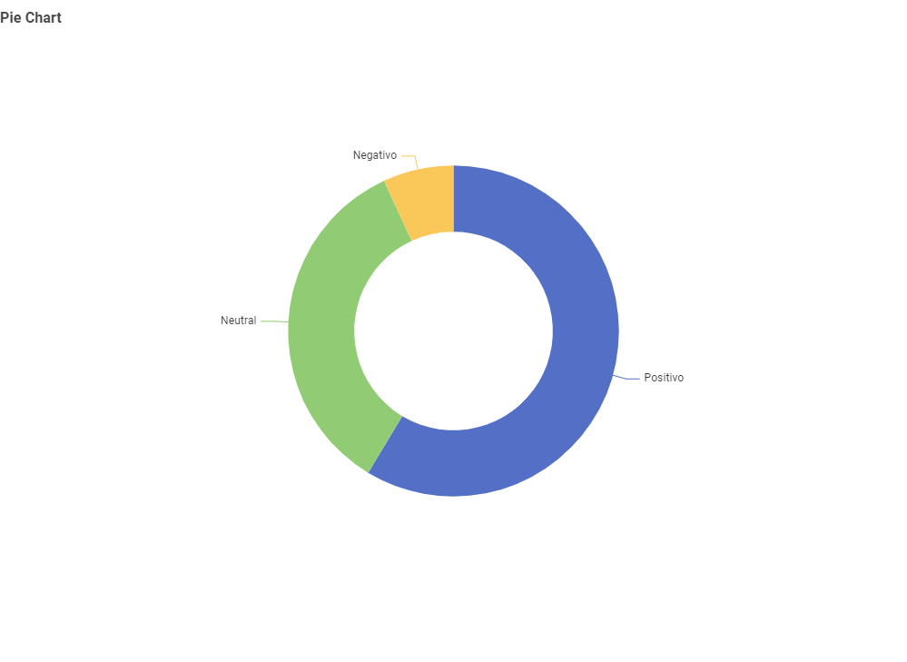

Este panel expone en tiempo real los resultados de la ingeniería de datos realizada sobre titulares de la prensa económica.
El motor léxico local clasifica las palabras individualmente y determina la tendencia mediante un proceso de agregación estadística (Moda).
Desplegado automáticamente mediante integración continua en Vercel.


| Entidad | Titular de la Noticia Financiera | Veredicto IA |
|---|